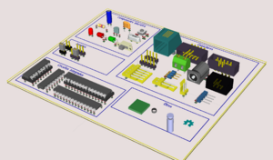
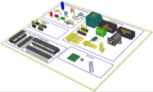
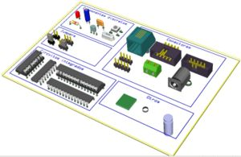

Contenido
[ocultar]Introducción
Monolito es una biblioteca de componentes para la herramienta libre de diseño electrónico Kicad. En ella hay componentes para el esquema, PCB y visualización en 3D. Todos los componentes de Monolito se han comprobado en fabricación.
Imágenes
| 
Componentes disponibles en Monolito-1.2 (Click para ampliar) |

Componentes disponibles en Monolito-1.1.1 (Click para ampliar) |


Descargas
Versión 1.2
| monolito-1.2.zip | Ficheros fuente |
| Monolito-1_2-sch-main.pdf | Esquema con los componentes. PDF |
| Monolito_1_2-sch-Discretos.pdf | Esquema. Componentes Discretos. PDF |
| Monolito-1_2-Integrados.pdf | Esquema. Circuitos integrados PDF |
| Monolito-1_2-brd.pdf | PCB con las huellas de los componentes. PDF |
Versión 1.1.1
| monolito-1.1.1.zip | Ficheros fuente |
| Monolito-1_1_1.svg | Esquema con los componentes. SVG |
| Monolito-1_1_1.pdf | Esquema con los componentes. PDF |
| Monolito-1_1_1-brd.svg | PCB con las huellas de los componentes. SVG |
| Monolito-1_1_1-brd.pdf | PCB con las huellas de los componentes. PDF |


Versión 1.1
| monolito-1.1.zip | Ficheros fuente |
| Monolito-1_1-sch.svg | Esquema con los componentes. SVG |
| Monolito-1_1-sch.pdf | Esquema con los componentes. PDF |
| Monolito-1_1-PCB.pdf | PCB con las huellas de los componentes. PDF |

Versión 1.0
| monolito-1.0.zip | Ficheros fuente |
| Monolito-1_0-sch.svg | Esquema con los componentes. SVG |
| Monolito-1_0-sch.pdf | Esquema con los componentes. PDF |
| Monolito-1_0-PCB.pdf | PCB con las huellas de los componentes. PDF |

Versión 0.2
| monolito-0.2.zip | Ficheros fuente |
| monolito-0.2-sch.pdf | PDF con los componentes para los esquemas |
| monolito-0.2-brd.pdf | PDF con las huellas para los PCBs |
Repositorio
- Repositorio SVN: http://svn.iearobotics.com/Monolito
Para obtener la última versión teclear:
svn co http://svn.iearobotics.com/Monolito/monolito-1.1.1
Historia
- 10/Ene/2012: Liberada versión 1.2: Componentes necesarios para la
SkyMega. Los nuevos componentes son:
- Conector acodado 3x2
- Conector acodado 4x1
- Micro AMEGA 168
- Logo de Open source Hardware: para esquema y PCB
- 05/Dic/2010: Liberada versión 1.1.1. Adaptada a la versión 2010-05-05 BZR 2356 de Kicad. Mismos componentes que la 1.1, pero ahora se ven correctamente en 3D (Blog)
- 26/Dic/2009: Liberada versión 1.1. Componentes necesarios para la
Skycube. Los nuevos componentes son:
- Conectores molex de 2 pines, rectos y acodados
- Conector molex de 5 pines, acodado
- Conector de 3 pines, acodado
- Switch on-off acodado
- Led acodado
- Modificado el taladro para ser de 3.2mm
- 25/Dic/2009: Liberada versión 1.0. Componentes necesarios para la Skypic-2009. Añadidos componentes en 3D. Todos los componentes han sido validados en fabricación! (Blog)
| 
Componentes disponibles en Monolito-1.0 (Click para ampliar) |

- 25/Jun/2005: Version 0.2. Añadidos nuevos componentes.
- 23/Jun/2005: Versión 0.1. Componentes necesarios para la creación de la placa Freeleds.
Autores
Licencia
|
Open Source Hardware Definition v1.0 |
Enlaces
Créditos
- Muchos de los componentes están basados en otros de las propias librerías del Kicad
- Muchos de los componentes 3D han sido creados por Renie S.Marquet o derivados a partir de los suyos. Muchas gracias :-)
Noticias
- 10/Ene/2012: Versión 1.2 liberada
- 05/Dic/2010: Version 1.1.1 liberada
- 26/Dic/2009: Version 1.1 liberada!!
- 25/Dic/2009: Versión 1.0 liberada!!
- 15/Dic/2009: Comenzada la migración desde esta página en html.